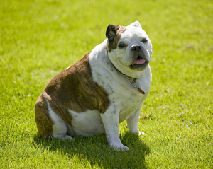

Dog obesity has been on the rise for years but new research shows that our best friends' weight problem is rapidly reaching crisis point.
The research, conducted by the PFMA (Pet Food Manufacturers Association), reveals that nearly half of the pets seen by vets are overweight. As a proportion of the total UK dog population, that would equate to almost 4 million British dogs that are carrying too much weight and living shorter lives as a result.
In fact, obesity can reduce a dogs life by up to two years with massively increased incidence of heart disease and diabetes. Overweight dogs are also much more likely to suffer from joint problems, high blood pressure and breathing difficulties.
Why are dogs getting heavier?
Obviously, nobody sets out to get their dog fat, so why are so many dogs overweight?
Ironically, the biggest cause of excess weight in dogs is our own kindness. We all want our dogs to be happy and a big part of their happiness comes from enjoying their food. The problem is the foods they enjoy the most tend to be the worst for them. Dogs, like humans, find fats and sugars absolutely irresistible. All of the most popular dog foods, treats, table-scraps and tidbits all around the world are high in fat and/or sugar. Over time, the excess fats and sugars are stored away in fat cells (sugar is converted to fat for storage) and as the months and years pass, the pounds start to pile up.
The issue is confounded by a general lack of awareness. According to vets, a fifth of owners of overweight dogs don't realise their pet is too heavy and 9 out of 10 don't see animal obesity as a life-threatening risk. We're all so used to seeing overweight dogs that their physique has now become the standard, while healthy, lean dogs are increasingly being reported to the RSPCA as malnourished.
Is my dog overweight?
As a rough guide, take a look at the below scale to see if your dog might be overweight. Ideally, when looking down from above, there should be a clear waistline and when looking from the side, the tummy should be tucked up towards the hind legs. You should be able to easily feel the last two ribs. If in doubt, you can always ask your vet.
My dog is overweight, what should I do?
Although some dogs are more prone to putting on weight than others, weight gain is only possible when the number of calories going in is greater than the amount being used by the dog. Therefore, to stop weight gain, or achieve weight loss, your dog has two options: to eat fewer calories or to burn more - or ideally, both.
The first step is to reduce treats and tidbits and to remove high fat treats from the diet altogether. Any dietary additions should be compensated by a similar reduction at meal times. For example, if you give your dog 30 grams of treat biscuits and a 50g chew each day, the amount fed during meal times should be reduced by roughly 80g to offset the treats.
Once treats have been cut back, the easiest way to ensure your dog takes in less calories is to simply feed less. Start off by cutting down the daily feeding amount by 10%. If you're not seeing any weight loss after 2-3 weeks, reduce the amount by a further 10% and so on until a slow weight loss is achieved.
You could also consider changing to a lower calorie diet. Many dog foods have their calorific content printed on the packaging but if not, try looking for a food with less fat and no added sugars. Our Dog Food Directory will be able to help.
Light diets contain fewer calories to help with weight loss. Take care when choosing a light diet though as some manufacturers reduce calories by replacing the high calorie (high quality) meat with low calorie (low quality) fillers like cellulose. An alternative would be to feed a lower amount of a normal adult food and top up with home-cooked vegetables or well-cooked grains like brown rice or porridge oats.
The second part of any weight loss programme should be exercise. Exercise burns calories and helps to keep your dog healthy. All dogs benefit from exercise, needing at least 30-60 minutes per day, with younger dogs and high energy breeds requiring considerably more. To achieve healthy weight loss, always try to combine healthy feeding with plenty of exercise. For dogs that are unused to a lot of exercise, take care to build up their activity slowly.
Always aim for gradual weight loss as too much too fast can lead to problems - about 1% of the dogs body weight per week is a good goal.
Once your dog is back to his ideal weight, gently increase the feeding amounts and/or re-introduce treats and table-scraps until the weight levels out. The diet may need to be continually tweaked to keep the balance but stick at it - your dog is worth it!